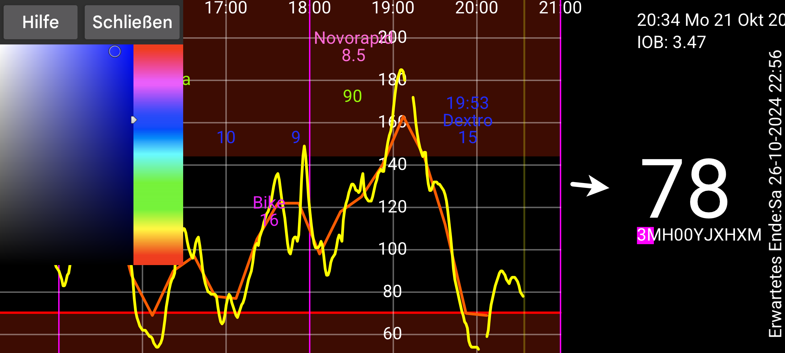

be de fr it nl pl pt ru sv tr uk zh en
Hier können Sie die Farben von Zahlen, Kurven und Scanpunkten ändern. Berühren Sie einen Punkt einer Kurve, einen Scan oder eine Menge (damit Informationen zu diesem Punkt oder Menge angezeigt werden). Berühren Sie danach eine Farbe in der Farbansicht. Die Kurve, der Scanpunkt oder die Menge werden nun in dieser Farbe angezeigt.
In der WearOS-Version benötigt man eine Uhr mit Zurück-Taste, Zurückwischen funktioniert nicht.